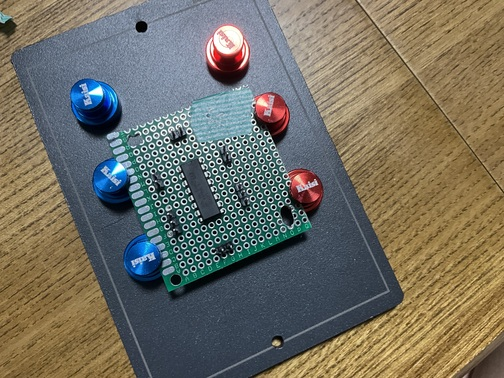
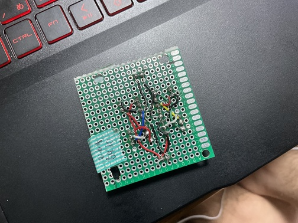

回路に関しては、②の回路を流用しました。
しかし、ブレッドボードのままではラジコンに搭載することは難しいので
ユニバーサル基板に回路を移植しました。

ユニバーサル基板に移植する以上、はんだ付けをしなければなりません
高校で回路制作の経験がありましたが、それでも苦戦しました。

個人的な反省点は、もう少しユニバーサル基板に余裕をもたせるべきだったこと
そして、部品の間隔をもう少し開けるべきだったことです
ここからラジコンに取り付けるのですが、そのままだと市販のラジコンと何ら変わりないです
aruduino cloudを使用しました。理由は、元々有線だった物を無線化してみたいと考えたこと
そして、スマホやipadなどから操作できるようにしたいと思ったからです。
arduino cloudの設定はこのような感じにしました

この設定を組む時、ものすごく苦戦しました。
初めてこのような機能を使ったので、手探りで頑張りました
things内部は、この様になっています

モーターを2つ搭載しているのでそれぞれをA,Bと定義しました
そしてそれぞれに、ON/OFF、回転方向の切り替え。そして両方に共通でスピードの変化を組み込みました

ダッシュボードの中はこのようになっており、このボタンを押すことで様々な機種から操作ができます
#include "thingProperties.h"
// モーターA
const int ENA = 7; // PWM出力可能なピン（速度制御）
const int IN1 = 5; // 方向制御
const int IN2 = 3; // 方向制御
// モーターB
const int ENB = 6; // PWM出力可能なピン（速度制御）
const int IN3 = 9; // 方向制御
const int IN4 = 10; // 方向制御
void setup() {
// デバッグ用
Serial.begin(9600);
// モーターAピン
pinMode(ENA, OUTPUT);
pinMode(IN1, OUTPUT);
pinMode(IN2, OUTPUT);
// モーターBピン
pinMode(ENB, OUTPUT);
pinMode(IN3, OUTPUT);
pinMode(IN4, OUTPUT);
// Arduino Cloud 初期化
initProperties();
ArduinoCloud.begin(ArduinoIoTPreferredConnection);
setDebugMessageLevel(2);
ArduinoCloud.printDebugInfo();
}
void loop() {
ArduinoCloud.update();
// 必要なら追加の処理をここに
}
// ========== モーター制御関数 ==========
// モーターAの更新
void updateMotorA() {
if (motorAState) { // ON
if (motorADirection) { // 正転
digitalWrite(IN1, HIGH);
digitalWrite(IN2, LOW);
} else { // 逆転
digitalWrite(IN1, LOW);
digitalWrite(IN2, HIGH);
}
analogWrite(ENA, motorSpeed);
} else {
analogWrite(ENA, 0); // 停止
}
}
// モーターBの更新
void updateMotorB() {
if (motorBState) { // ON
if (motorBDirection) { // 正転
digitalWrite(IN3, HIGH);
digitalWrite(IN4, LOW);
} else { // 逆転
digitalWrite(IN3, LOW);
digitalWrite(IN4, HIGH);
}
analogWrite(ENB, motorSpeed);
} else {
analogWrite(ENB, 0); // 停止
}
}
// ========== Arduino Cloud のコールバック関数 ==========
void onMotorADirectionChange() {
Serial.println("Motor A Direction changed");
updateMotorA();
}
void onMotorAStateChange() {
Serial.println("Motor A State changed");
updateMotorA();
}
void onMotorBDirectionChange() {
Serial.println("Motor B Direction changed");
updateMotorB();
}
void onMotorBStateChange() {
Serial.println("Motor B State changed");
updateMotorB();
}
void onMotorSpeedChange() {
Serial.print("Motor Speed changed: ");
Serial.println(motorSpeed);
updateMotorA();
updateMotorB();
}